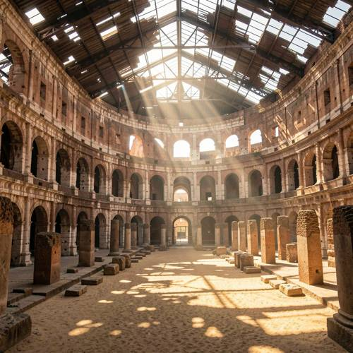
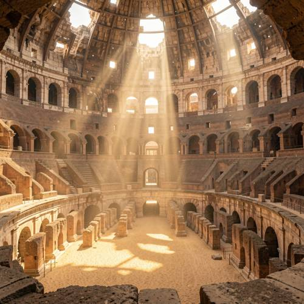
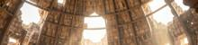

World Knowledge — From the interior perspective of the ancient Roman Colosseum, sunlight
From the interior perspective of the ancient Roman Colosseum, sunlight shines in through the dilapidated roof structure, illuminating the sand and passages below.

Direct — one call, no iteration

Continuum — Qwen3.8-27B + FLUX.2-klein-9B
Judge — Direct
FAILWorld Knowledge — The image displays an interior view of a large, elliptical amphitheater with tiered arcades made of stone and brick, which strongly resembles the architectural style of the ancient Roman Colosseum. However, the structure is shown with a large, modern-style roof made of beams and glass or translucent panels, which is now in a dilapidated state. The actual ancient Roman Colosseum is an open-air structure and never had this type of permanent roof, making this depiction historically inaccurate.
Judge — Continuum
PASSWorld Knowledge — The image displays the interior of a large, elliptical amphitheater made of stone and brick, which is in a state of ruin. The structure features characteristic elements of the ancient Roman Colosseum, such as the tiered seating, numerous arches on multiple levels, and the exposed substructure (the hypogeum) on the arena floor. While the depicted domed roof is not historically accurate for the Colosseum, the overall architectural style, scale, and state of decay are visually consistent with the famous landmark.
What the agent did
Thinking
The user is asking for an image of an interior view of the ancient Roman Colosseum, with sunlight streaming in through a damaged (dilapidated) roof structure, illuminating the sand and passages below. First, let's generate the image with flux2-klein as instructed. The prompt should be a detailed visual description: "Interior view of the ancient Roman Colosseum, looking across the arena floor, broken and dilapidated roof arches at the top, volumetric shafts of sunlight streaming down through gaps in the ruined roof structure, illuminating the sandy arena floor and stone corridors and passageways below, dusty light beams, ancient stone walls with arcades, atmospheric, cinematic lighting, warm golden light" Let's generate it with flux2-klein.
Step 1 — `generate_image`
{
"prompt": "Interior perspective from within the ancient Roman Colosseum, looking out across the sandy arena floor toward the towering tiered stone walls with rows of empty arcades and arches. Above, the roof structure is dilapidated and broken, with large gaps and collapsed sections, and strong shafts of warm sunlight stream down through the ruined roof openings, forming dramatic volumetric god rays that illuminate the sand, the hypogeum passages and corridors below, and dust particles floating in the light beams. Weathered travertine stone, warm golden light against cool shadow, cinematic atmospheric lighting, ancient ruins, epic scale, photorealistic.",
"model": "flux2-klein",
"width": 1536,
"height": 1024
}
Result img_0
Thinking
The image is actually very good. It shows the interior of the Colosseum with sunlight streaming down through the damaged upper structure, illuminating the sandy arena floor and the hypogeum passages below. The composition fits the prompt well: - Interior viewpoint of the Colosseum ✓ - Sunlight streaming in through the damaged roof ✓ - Illuminating the sand below ✓ - Passages (hypogeum corridors) ✓ It's a bit more "intact" than the actual current Colosseum (the upper part is fairly complete with a dome-like coffered ceiling), but the prompt does say "ancient Roman Colosseum... damaged roof structure," so this is fine. The coffered ceiling with gaps fits "damaged roof structure" reasonably well. Let me check the details. The light beams are beautiful and dramatic. The sand is illuminated, and the passages below (the arcade ring and the central passage) are also illuminated. Let me inspect a region to see if there are any artifacts. Actually, the image looks clean. I could zoom in on the upper part to verify the damaged roof. Let me do a quick check of the top area and the center. Honestly, this is a strong result. Let me mark it as the best, do a quick check of a few regions, and confirm there are no major artifacts.
Model
The first generation captures the scene well. Let me inspect a couple of regions to verify quality before deciding.
Step 2 — `inspect_region`
{
"image": "img_0",
"roi": "the broken roof area at the top with sunlight",
"padding": 0.05
}
Result img_1

Step 3 — `inspect_region`
{
"image": "img_0",
"roi": "[x1, y1, x2, y2] the central arena floor and passages in the lower middle",
"padding": 0.05
}
Thinking
The inspection of the roof area shows a weathered stone and wooden ceiling with gaps, and light is streaming in — it looks good, with no obvious artifacts. The second inspection failed with a text roi. Let me try the lower area with a rectangle.
Model
The roof area looks convincingly dilapidated with clean light gaps. Let me check the arena floor region with a rectangle.
The arena floor region shows the following: - A sandy arena floor with patches of sunlight cast through the roof - Rows of pillars (the hypogeum / subterranean passage structure) - Arched passageways on both sides - Beautiful light and shadow patterns from the roof's beam grid Everything is rendering cleanly. The image matches the prompt well: - Interior viewpoint of the ancient Roman Colosseum ✓ - Sunlight streaming in through the damaged roof ✓ - Sand and passages below are illuminated ✓ The quality is high, with no obvious artifacts. This is a good result. I'll mark it as the best and stop—following "good enough is the stopping condition." One small note: the upper portion of the structure is fairly complete, but the prompt says "damaged roof structure," and the coffered ceiling with broken sections and gaps does show damage. No problem. I'll mark img_0 as the best.
Model
Both areas look clean: the weathered coffered ceiling with broken gaps and light beams, and the sun-drenched sandy arena with the arched hypogeum passages and pillar rows below. All the elements in the prompt are present and rendered without artifacts. This is a strong result.
Step 5 — `mark_best`
{
"image": "img_0",
"reason": "Interior view of the Colosseum with dramatic sunbeams through the dilapidated coffered roof, illuminating the sandy arena floor and the arched passages/pillars below \u2014 all prompt elements present, clean rendering."
}
Thinking
The mark has been set. The last action was the check on the mark—done. The image is marked as the best. Now I'll write the final summary.
Model
Done. The final image (marked as best) shows the interior of the ancient Roman Colosseum from the seating level, looking down across the arena: - **Dilapidated roof**: a weathered coffered stone-and-wood ceiling with broken sections and open gaps, through which bright skylight pours in - **Light**: strong volumetric god rays cut diagonally down the scene, with dust motes visible in the beams - **Sand**: the sandy arena floor is washed in warm golden light, dappled by shadows of the roof structure - **Passages**: the hypogeum ring of arched corridors, pillar rows, and the central passage below catch the light, framing the composition I verified the roof and arena-floor regions at full resolution — both render cleanly with no artifacts — so I stopped at this version.